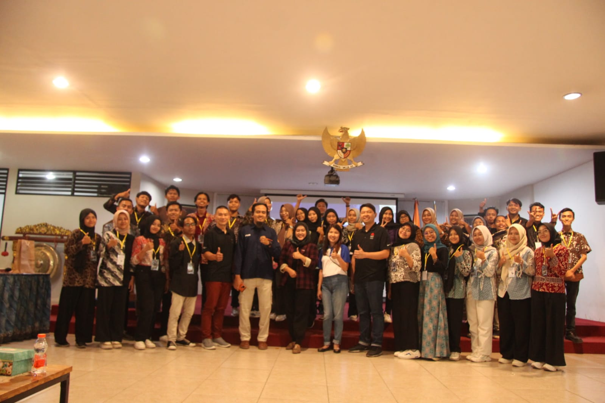

Data Diri
Hi, im Nurzilah Hidayati
Frontend Development
Tentang Diri Saya
Saya Nurzilah Hidayati, Mahasiswi Teknik Informatika, Politeknik Harapan Bersama Tegal. Saat ini saya Semester 3, Saya lebih menyukai desain seperti figma. Goal saya setelah 4 Tahun kuliah yaitu bekerja sebagai UI/UX designer di perusahaan besar indonesia.
Sertifikat Huawei
.png)
Resume Kegiatan Organisasi
-
Panitia PKKMB Poltek Harber 2023 - Divisi Sponsor

-
Panitia Fun Camp Teknik Informatika 2023 - Divisi Acara
-
Panitia Invofest 2023 - Divisi Kreatif dan Dokumentasi

Contoh Pekerjaan
Resume Hasil Seminar
SEMINAR NASIONAL & AWARDING NATIONAL IT COMPETITION INVOFEST 2023
-
Rabu, 25 Oktober 2023
Sejak tahun 2017, Imatama telah bermitra dengan Delteknologi dan telah berhasil mengembangkan tiga solusi utama. Solusi pertama adalah "Modern ID in Transaction" yang dirancang untuk bekerjasama dengan lembaga lain. Yang kedua adalah "Modern Application Development," yang melibatkan kolaborasi dalam berbagai bahasa pemrograman. Dan yang ketiga adalah "Arti Security," yang difokuskan pada layanan keamanan, terutama untuk klien di sektor keuangan. Imatama juga menyediakan peluang pekerjaan bagi individu yang ingin mengaplikasikan pengetahuan mereka yang didapatkan selama berkuliah, menggarisbawahi pentingnya memiliki portofolio yang kuat. Mereka menekankan nilai kesabaran dan konsistensi sambil terus memperkuat kemampuan teknis dan komunikasi. Selain itu, pembicara memberikan contoh konsep Minimum Viable Product (MVP) dalam menyelesaikan masalah, seperti menciptakan aplikasi untuk membantu individu yang merasa stres dengan menyediakan layanan konsultasi.
Materi yang disampaikan oleh Mas Indra membicarakan perubahan dalam tren belanja sebagai akibat munculnya platform seperti Tokopedia dan Shopee. Selain itu, dia juga memperkenalkan Expo sebagai solusi untuk mempercepat proses ekspor dalam sektor maritim. Dalam presentasinya, Mas Indra mencakup isu-isu keamanan data, peningkatan penggunaan layanan Cloud, dan pentingnya mendapatkan sertifikasi. Dia memberikan gambaran tentang konsep Open Shift, memberikan penekanan pada pengembangan mobile banking, dan mencatat pertumbuhan penggunaan teknologi Open Source dalam industri. Mas Indra juga mengusulkan fokus dalam mempelajari Open Source sebagai cara untuk meningkatkan peluang karir. Terakhir, dia berbagi informasi tentang Landscape, produk, dan solusi yang ditawarkan oleh Pratama.
Pembicara, Pak Novi, merupakan CEO dan pendiri Komerce, sebuah startup yang berbasis di desa atau daerah terpencil. Komerce adalah sebuah aplikasi yang digunakan untuk memberikan konsultasi teknologi. Awalnya, Pak Novi adalah seorang Pegawai Negeri Sipil (PNS), namun dia menyadari bahwa pendapatannya jauh lebih rendah dibandingkan dengan mereka yang bekerja di bidang teknologi. Maka dari itu, dia memutuskan untuk mendirikan aplikasi Komerce dan menjabat sebagai CEO serta pendiri perusahaan tersebut. Dalam presentasinya, Pak Novi berbagi pengalaman tentang bagaimana kita bisa mengelola teknologi dengan efisien. Dia juga mengajarkan langkah-langkah untuk mendirikan startup seperti yang dia lakukan, dengan tujuan agar dapat mencapai kesuksesan. Motivasi utama Pak Novi adalah untuk memajukan Usaha Mikro, Kecil, dan Menengah (UMKM).
Kontak Saya
- Alamat Email: jilaaa.scorpio@gmail.com
- No. Telepon: 0857-1279-9296
- LinkedIn: LinkedIn Profile
- GitHub: GitHub Profile
- Instagram: Instagram